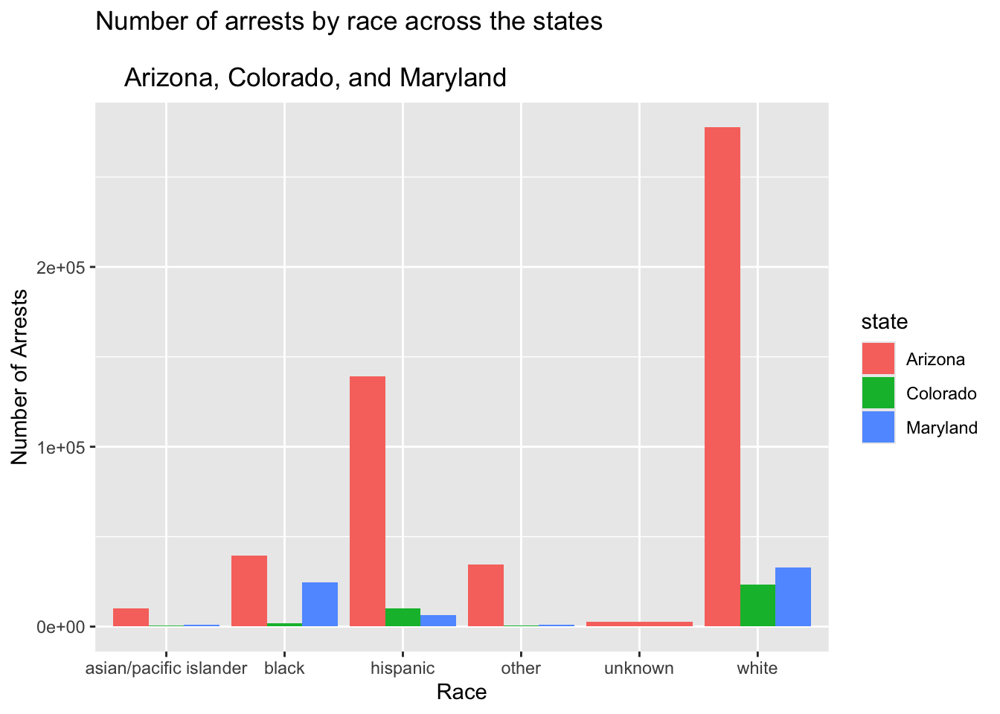
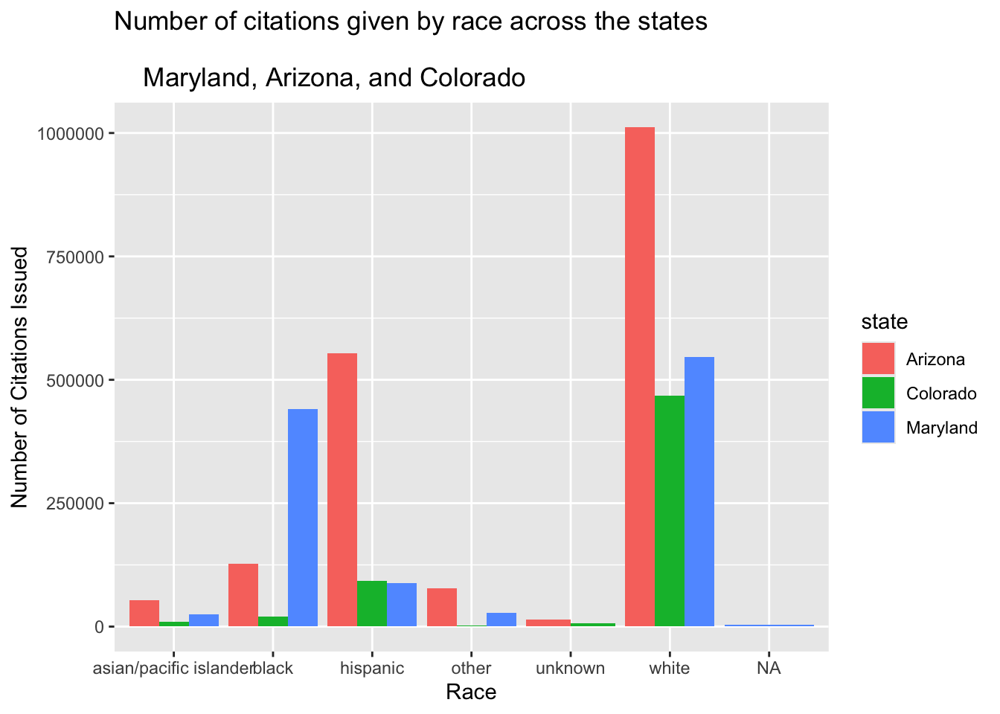
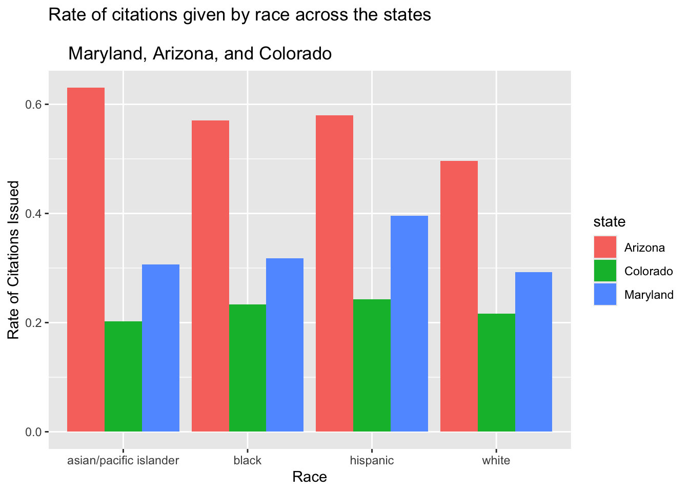

library(ggplot2)Arrests and Warnings categorized by race across the states of Arizona, Maryland, and Colorado
SQL queries of the data from Stanford Open Policing Project
con_traffic <- DBI::dbConnect(
RMariaDB::MariaDB(),
dbname = "traffic",
host = Sys.getenv("TRAFFIC_HOST"),
user = Sys.getenv("TRAFFIC_USER"),
password = Sys.getenv("TRAFFIC_PWD")
)Introduction
When a traffic stop is made, a cop can choose to arrest an individual, write them a citation, or give them a warning. A warning is the most minor, while a citation tends to mean a fine and other possible punishments, with an arrest being the worst as there is more reason to believe that a true crime has been committed. Using the Stanford Open Policing Project, I wanted to explore data regarding the amount of warnings, citations, and arrests made based on race in various states. I thought this was interesting and important to look at to see if there are any trends based on the severity of the punishment given to an individual and their race. Given the diversity of the United States of America, I chose to use 3 states that represented different areas of the country - the west, through Arizona, the midwest through Colorado, and the east coast, through Maryland. Although they have different populations, with Arizona over a million people more than the next one, Maryland, I thought it was best to get a good representation of different regions of the country. I split the data up based on the punishment given to the person who was stopped, which I then used to create a bar graphs with side by side comparisons split by race and state.
SELECT 'Maryland' AS state, subject_race, COUNT(*) AS num_arrests
FROM md_statewide_2020_04_01
WHERE arrest_made = 1
GROUP BY subject_race
HAVING num_arrests > 300
UNION
SELECT 'Arizona' AS state, subject_race, COUNT(*) AS num_arrests
FROM az_statewide_2020_04_01
WHERE arrest_made = 1
GROUP BY subject_race
HAVING num_arrests > 300
UNION
SELECT 'Colorado' AS state, subject_race, COUNT(*) AS num_arrests
FROM co_statewide_2020_04_01
WHERE arrest_made = 1
GROUP BY subject_race
HAVING num_arrests > 300
ORDER BY state, num_arrests DESCThe SQL query creates a table with information regarding the number of arrests made in Maryland, Colorado, and Arizona, categorized by race. The information is limited to data points over 300 arrests made as anything lower was not a significant piece of information. It is compiled into one table, where it displays each state, with the top data point representing the race that had the most arrests made in that state. It is then put into the table “arrests_table” which is used to create the visualization of the arrests made.
ggplot(arrests_table, aes(x = subject_race, y = num_arrests, fill = state)) +
geom_col(position = "dodge") +
labs(
title = "Number of arrests by race across the states \n
Arizona, Colorado, and Maryland",
x = "Race",
y = "Number of Arrests"
)
The bar graph represents the number of arrests made by race, with each race having three bars representative of the different states. Arizona has the most arrests made for every race. Although this can be attributed to its larger population, the amount of arrests made are also much larger than the other states. This could point to a possibility of more crime in Arizona than Colorado and Maryland, as the number of arrests are not proportional to the total population of the state. Maryland had similar amounts of arrests made for both black and white people, while the other states had much more arrests made on white people than made on black people. The amount of white people is the highest race arrested for each state, which is likely due to population makeup. Overall, there does not seem to be any alarming trends in the arrests made by state.
SELECT 'Maryland' AS state, subject_race, COUNT(*) AS num_citations
FROM md_statewide_2020_04_01
WHERE citation_issued = 1
GROUP BY subject_race
HAVING num_citations > 1000
UNION
SELECT 'Arizona' AS state, subject_race, COUNT(*) AS num_citations
FROM az_statewide_2020_04_01
WHERE citation_issued = 1
GROUP BY subject_race
HAVING num_citations > 1000
UNION
SELECT 'Colorado' AS state, subject_race, COUNT(*) AS num_citations
FROM co_statewide_2020_04_01
WHERE citation_issued = 1
GROUP BY subject_race
HAVING num_citations > 1000
ORDER BY state, num_citations DESCThe SQL query creates a table with information regarding the number of citations given in Maryland, Colorado, and Arizona, categorized by race. The information is limited to data points over 1000 citations given as anything lower was not a significant piece of information. It is compiled into one table, where it displays each state, with the top data point representing the race that had the most citations given in that state. It is then put into the table “citations_table” which is used to create the visualization of the citations given.
ggplot(citations_table, aes(x = subject_race, y = num_citations, fill = state)) +
geom_col(position = "dodge") +
labs(
title = "Number of citations given by race across the states \n
Maryland, Arizona, and Colorado",
x = "Race",
y = "Number of Citations Issued"
)
The bar graph represents the number of citations made by race, with each race having three bars to represent the different states. Arizona has an overwhelmingly high amount of citations given to white and hispanic people, while Maryland gave the most citations to black people. A clear difference is seen in Maryland and Arizona, where the numbers of citations given to white people and black people are similar in Maryland, while much more white people were given citations than black people in Arizona. The difference between hispanic and white in Arizona is quite substantial as well, with the number of citations written to hispanic people about half that of white people. Based on our data, we can see that it is contant across the states for white people to be written the most citations.
SELECT 'Maryland' AS state, subject_race, COUNT(*) AS num_warnings
FROM md_statewide_2020_04_01
WHERE warning_issued = 1
GROUP BY subject_race
HAVING num_warnings > 5000
UNION
SELECT 'Arizona' AS state, subject_race, COUNT(*) AS num_warnings
FROM az_statewide_2020_04_01
WHERE warning_issued = 1
GROUP BY subject_race
HAVING num_warnings > 5000
UNION
SELECT 'Colorado' AS state, subject_race, COUNT(*) AS num_warnings
FROM co_statewide_2020_04_01
WHERE warning_issued = 1
GROUP BY subject_race
HAVING num_warnings > 5000
ORDER BY state, num_warnings DESCThe SQL query creates a table with information regarding the number of warnings given in Maryland, Colorado, and Arizona, categorized by race. The information is limited to data points over 5000 warnings given as anything lower was not a significant piece of information. It is compiled into one table, where it displays each state, with the top data point representing the race that had the most warnings given in that state. It is then put into the table “warnings_table” which is used to create the visualization of the warnings given.
ggplot(warnings_table, aes(x = subject_race, y = num_warnings, fill = state)) +
geom_col(position = "dodge") +
labs(
title = "Number of warnings given by race across the states \n
Arizona, Colorado, and Maryland",
x = "State",
y = "Number of Warnings issued"
)
The bar graph represents the number of warnings issued by race, with each race having three bars to separate data amongst the states. Likely as a result of population differences, white people have the highest amount of warnings issued to them across all states. The second highest for the state of Maryland is black people, while the second highest for Arizona is Hispanic. In Colorado, the second is Hispanic however it is much less than that of white people. It could be a reflection of the proportion of the population, but the difference in citations for black people and white people is substantial in Arizona and Colorado, however not as far off in Maryland.
Conclusion
In order to create our visualizations of arrests made, citations issued, and warnings given by race across the states of Arizona, Maryland, and Colorado in traffic stops, I utilized SQL queries. Each dataset had a variable pertaining to arrests, citations, or warnings. I extracted number of each that was given, grouping by race in order to give the total number of each category given by race. I then used union to combine data and create tables for each type of punishment given. I followed the same steps for each arrests, citations, and warnings, where the variable was given a value of 1 if it was the outcome, and 0 if it was not, so 1 was seen as a datapoint that I wanted to track. I then removed the lowest numbers by race, as they were often just the “other” or “unknown” category, so the data was not extremely useful. From these combined tables I then created the graphs to visualize the data and look for any clear trends.
References
Pierson, Emma, Camelia Simoiu, Jan Overgoor, Sam Corbett-Davies, Daniel Jenson, Amy Shoemaker, Vignesh Ramachandran, et al. 2020. “A Large-Scale Analysis of Racial Disparities in Police Stops Across the United States.” Nature Human Behaviour, 1–10.